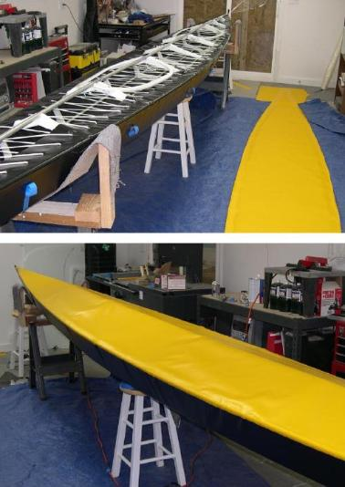
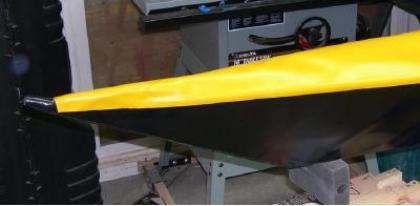

| Covering The Deck (4 of 5) | Menu Last Page Next Page |
|  |
One-Piece Deck
5. After marking the trim line at the gunwales, cut off the excess material with scissors. Place masking tape along the entire hull length to serve as a border for the area to be prepped and glued. This keeps the glue from overlapping onto the hull skin below. ( Tape not shown in photos)
Clean the glue areas of the deck and hull with MEK and brush on HH-66 cement. Once dry, re-position the deck on the frame and hold in place with masking tape. Starting at the bow, heat and use hand pressure to bond the deck to the hull. Glue a couple of feet on one side, move to the other side, and continue this back and forth process until the deck is finished. Be very careful to keep the PVC from moving. Go back over the glue joints a second time to insure that a good bond is achieved. Use a light touch when gluing, and go back over the area again with more heat /pressure Note: If glued properly, the vinyl coating, under extreme stress, will delaminate from the polyester core before the glue joint fails.
 |